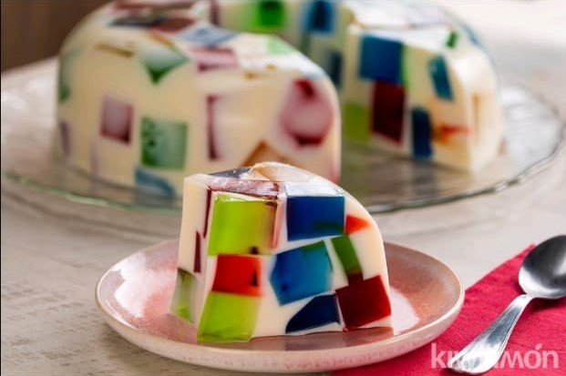

| ºN | Nombre | Imagen | Descripción |
|---|---|---|---|
| 1 | Pastel de Chocolate | El pastel de chocolate uno de mis postres favoritos ya que cualquier otro tipo de pastel no es de mi agrado, por el cual el chocolate me gusta mucho ,pero también no debo comer mucho por qué me hace daño. | |
| 2 | Pay de Limón | También el pay de limón es un postre muy rico, cuando llegó a comer ese postre es cuando convivo con mi mamá y nos ponemos a platicar ya que entre ella y yo no hay mucha comunicación. | |
| 3 | Gelatinas de Mosaico |  | La gelatinas de mosaico Es un postre rico ya que se hace una combinación de varias gelatinas y se disfruta mucho. |